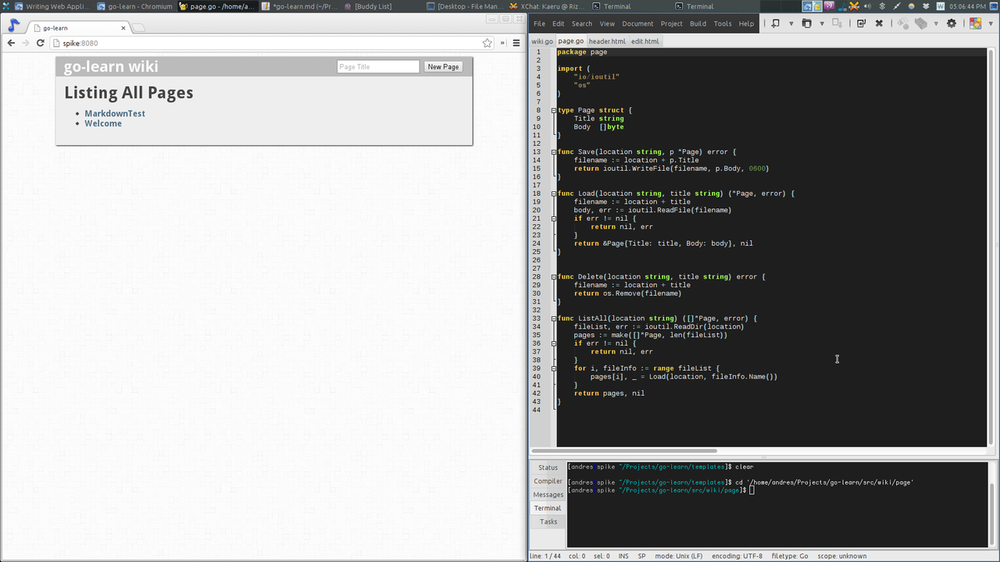

Go Learn
Today I decided to try out Go.
What is Go?
Go is a programming language designed and developed at Google. It was designed by really smart people: Robert Griesemer, Rob Pike, and Ken Thompson.
Syntax-wise, it looks a lot like C, except the ending semicolons
are optional, and parentheses for if, for, etc are not required.
Here's a gist showing some syntax: It's a fibonacci calculator made using a closure, caching previously calculated numbers.
Features
- Statically typed (but types can be inferred).
- Concurrency baked in (goroutines, channels).
- Garbage collection.
- Fast compile times.
- No classes (you attach functions to structs instead).
- No inheritance (Go makes heavy use of interfaces).
- No overloading.
- No pointer arithmetic.
Coding in Go
To learn Go, I first did a quick read of Learn X in Y Minutes to get a grip of the syntax.
Then, I went over to their official website and took the tour.
Afterwards, I wanted to get a working application. Go includes an http server in their official packages, so I decided to make a web application.
After a little searching, I found they had a tutorial aimed at web applications, so I decided to use exactly that. Go documentation rocks!
I followed the tutorial along and was able to get a wiki type of website up and running in about 20 minutes. After that, I decided I wanted to add markdown support to it, and a few more features, like creating new pages and deleting pages.
One thing I really liked about Go is that it comes with a lot of useful packages so you can start working right away. For example, I thought I would have to write some sort of templating system, but Go already comes with one. And it's context aware! So you don't have to worry about escaping things!
Packages
Go's packaging system allows you to get packages from VCS repositories. For example, to add markdown support to my wiki, I added knieriem's markdown package as a git submodule in my project.

As usual, my project is on Github.